RM3140CG
_51
发动机/混合动力系统
_023966
4ZR-FE 发动机控制系统
_0120142
SFI 系统
U
4ZR-FE 发动机控制系统 SFI 系统 ECM 端子
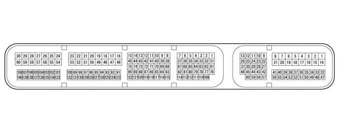
2.531,0.354 2.927,0.594
0.396,0.24
5.906,0.354 6.302,0.594
0.396,0.24
2.604,0.396 3.052,0.677
0.448,0.281
10
false
B39
5.979,0.396 6.365,0.698
0.385,0.302
10
false
A40
- 提示：
-
下表列出了每对 ECM 端子之间的标准电压、电阻和波形。同时还指出了每对端子的相应检查条件。将检查结果与规定状态栏所示的每对端子的标准电压、电阻和波形进行比较。上图可用作识别 ECM 端子位置的参考。
| 端子编号（符号） | 配线颜色 | 端子描述 | 条件 | 规定状态 |
|---|---|---|---|---|
| A40-1 (BATT) - B39-59 (E1) | P - BR | 蓄电池（测量蓄电池电压和 ECM 存储器） | 始终 | 11 至 14 V |
| A40-2 (+B) - B39-59 (E1) | B - BR | ECM 电源 | 点火开关 ON | 11 至 14 V |
| A40-3 (+B2) - B39-59 (E1) | B - BR | ECM 电源 | 点火开关 ON | 11 至 14 V |
| A40-6 (IGSW) - B39-59 (E1) | B - BR | 点火开关信号 | 点火开关 ON | 11 至 14 V |
| A40-9 (STP) - B39-59 (E1) | W - BR | 刹车灯开关总成信号 | 踩下制动踏板 | 7.5 至 14 V |
| 松开制动踏板 | 低于 1.5 V | |||
| A40-10 (ST1-) - B39-59 (E1) | R - BR | 刹车灯开关总成信号
（与 STP 端子电压相对） |
点火开关置于 ON 位置，踩下制动踏板 | 低于 1.5 V |
| 点火开关置于 ON 位置，制动踏板松开 | 7.5 至 14 V | |||
| A40-13 (CANH) - B39-59 (E1) | B - BR | CAN 通信线路 | 点火开关 ON | 产生脉冲
（参见波形 1） |
| A40-23 (NSW)*2 - B39-59 (E1) | W - BR | 驻车/空档位置开关总成信号 | 点火开关置于 ON 位置，换档杆未置于 P 或 N | 11 至 14 V |
| 点火开关置于 ON 位置，换档杆置于 P 或 N | 低于 1.0 V | |||
| A40-26 (CANL) - B39-59 (E1) | W - BR | CAN 通信线路 | 点火开关 ON | 产生脉冲
（参见波形 2） |
| A40-27 (W) - B39-59 (E1) | LG - BR | 故障指示灯 (MIL) 工作信号 | 点火开关 ON（MIL 点亮） | 低于 1.5 V |
| 发动机暖机时怠速运转 | 11 至 14 V | |||
| A40-29 (STA) - B39-59 (E1) | LG - BR | 起动机总成信号 | 发动机起动 | 6 V 或更高 |
| A40-31 (TACH) - B39-59 (E1) | GR - BR | 发动机转速信号 | 发动机暖机时怠速运转 | 产生脉冲
（参见波形 3） |
| A40-32 (EC) - 车身接地 | BR - 车身接地 | ECM 接地（接地）电路 | 始终 | 小于 1 Ω |
| A40-33 (TC) - B39-59 (E1) | P - BR | DLC3 端子 TC | 点火开关 ON | 11 至 14 V |
| A40-34 (ELS2) - B39-59 (E1) | L - BR | 电气负载信号 | 后窗除雾器开关打开 | 11 至 14 V |
| 后窗除雾器开关关闭 | 低于 1.5 V | |||
| A40-39 (PBV)*2 - B39-59 (E1) | LG - BR | 制动喷射器 VSV 工作信号 | 点火开关 ON | 11 至 14 V |
| A40-41 (FPC) - B39-59 (E1) | V - BR | 燃油泵控制器 | 发动机停止，点火开关置于 ON 位置 | 低于 1.5 V |
| A40-44 (SPD) - B39-59 (E1) | V - BR | 来自组合仪表总成的车速信号 | 以 20 km/h (12 mph) 的速度行驶 | 产生脉冲
（参见波形 4） |
| A40-46 (MREL) - B39-59 (E1) | L - BR | EFI 主继电器工作信号 | 点火开关 ON | 11 至 14 V |
| A40-47 (VPA) - A40-48 (EPA) | W - Y | 加速踏板位置传感器信号（发动机控制） | 点火开关置于 ON 位置，加速踏板完全松开 | 0.5 至 1.1 V |
| 点火开关置于 ON 位置，加速踏板完全踩下 | 2.6 至 4.5 V | |||
| A40-49 (VCPA) - A40-48 (EPA) | B - Y | 加速踏板位置传感器电源 (VPA) | 点火开关 ON | 4.5 至 5.5 V |
| A40-50 (VPA2) - A40-51 (EPA2) | R - P | 加速踏板位置传感器信号 | 点火开关置于 ON 位置，加速踏板完全松开 | 1.2 至 2.0 V |
| 点火开关置于 ON 位置，加速踏板完全踩下 | 3.4 至 4.75 V | |||
| A40-52 (VCP2) - A40-51 (EPA2) | L - P | 加速踏板位置传感器电源 (VPA2) | 点火开关 ON | 4.5 至 5.5 V |
| A40-60 (RFC) - B39-59 (E1) | R - BR | 冷却风扇控制信号 | 点火开关置于 ON 位置，空调开关打开（最冷） | 产生脉冲
（参见波形 5） |
| B39-26 (E04) - 车身接地 | W-B - 车身接地 | ECM 接地（接地）电路 | 始终 | 小于 1 Ω |
| B39-27 (HA1A) - B39-26 (E04) | R - W-B | 空燃比传感器加热器工作信号 | 点火开关 ON | 11 至 14 V |
| 空燃比传感器预热前怠速 | 产生脉冲
（参见波形 6） |
|||
| B39-28 (ME01) - 车身接地 | W-B - 车身接地 | ECM 接地（接地）电路 | 始终 | 小于 1 Ω |
| B39-29 (+BM) - B39-59 (E1) | B - BR | 节气门执行器电源 | 始终 | 11 至 14 V |
| B39-30 (M-) - B39-28 (ME01) | W - W-B | 节气门执行器工作信号（负信号） | 发动机暖机时怠速运转 | 产生脉冲
（参见波形 7） |
| B39-33 (PRG) - B39-59 (E1) | L - BR | 净化 VSV 工作信号 | 点火开关 ON | 11 至 14 V |
| 发动机暖机时怠速运转，处于净化控制 | 产生脉冲
（参见波形 8） |
|||
| B39-35 (OC1+) - B39-34 (OC1-) | B - Y | 凸轮轴正时机油控制阀总成（进气凸轮轴）工作信号 | 怠速运转 | 产生脉冲
（参见波形 9） |
| B39-37 (OE1+) - B39-36 (OE1-) | G - P | 凸轮轴正时机油控制阀总成（排气凸轮轴）工作信号 | 怠速运转 | 产生脉冲
（参见波形 10） |
| B39-56 (HT1B) - B39-59 (E1) | L - BR | 加热型氧传感器加热器工作信号 | 点火开关 ON | 11 至 14 V |
| 怠速运转 | 低于 3.0 V | |||
| B39-57 (E01) - 车身接地 | W-B - 车身接地 | ECM 接地（接地）电路 | 始终 | 小于 1 Ω |
| B39-58 (E02) - 车身接地 | W-B - 车身接地 | ECM 接地（接地）电路 | 始终 | 小于 1 Ω |
| B39-59 (E1) - 车身接地 | BR - 车身接地 | ECM 接地（接地）电路 | 始终 | 小于 1 Ω |
| B39-60 (M+) - B39-28 (ME01) | B - W-B | 节气门执行器工作信号（正信号） | 发动机暖机时怠速运转 | 产生脉冲
（参见波形 11） |
| B39-65 (D)*3 - B39-59 (E1) | GR - BR | 离合器踏板开关（向上开关）信号 | 点火开关置于 ON 位置，离合器踏板完全踩下 | 低于 1.0 V |
| 点火开关置于 ON 位置，离合器踏板完全松开 | 11 至 14 V | |||
| B39-71 (IGF1) - B39-59 (E1) | Y - BR | 点火线圈总成
（点火确认信号） |
点火开关 ON | 4.5 至 5.5 V |
| 发动机暖机时怠速运转 | 产生脉冲
（参见波形 12） |
|||
| B39-72 (IGT4) - B39-59 (E1) | W - BR | 4 号点火线圈总成信号
（点火信号） |
发动机暖机时怠速运转 | 产生脉冲
（参见波形 12） |
| B39-73 (IGT3) - B39-59 (E1) | G - BR | 3 号点火线圈总成信号
（点火信号） |
发动机暖机时怠速运转 | 产生脉冲
（参见波形 12） |
| B39-74 (IGT2) - B39-59 (E1) | B - BR | 2 号点火线圈总成信号
（点火信号） |
发动机暖机时怠速运转 | 产生脉冲
（参见波形 12） |
| B39-75 (IGT1) - B39-59 (E1) | R - BR | 1 号点火线圈总成信号
（点火信号） |
发动机暖机时怠速运转 | 产生脉冲
（参见波形 12） |
| B39-77 (VC) - B39-76 (E2) | R - Y | 真空传感器电源 | 点火开关 ON | 4.75 至 5.25 V |
| B39-78 (HAC) - B39-76 (E2) | V - Y | 真空传感器信号 | 点火开关 ON | 3.0 至 5.25 V |
| B39-80 (EV1+) - B39-112 (EV1-) | P - B | 凸轮轴位置传感器（排气凸轮轴）信号 | 发动机暖机时怠速运转 | 产生脉冲
（参见波形 13） |
| B39-82 (VV1+) - B39-115 (VV1-) | B - P | 凸轮轴位置传感器（进气凸轮轴）信号 | 发动机暖机时怠速运转 | 产生脉冲
（参见波形 13） |
| B39-89 (THEO) - B39-90 (ETHE) | B - W | 发动机机油温度传感器信号 | 发动机暖机时怠速运转 | 0.3 至 0.85 V |
| B39-95 (#20) - B39-57 (E01) | Y - W-B | 2 号喷油器总成信号 | 点火开关 ON | 11 至 14 V |
| 发动机暖机时怠速运转 | 产生脉冲
（参见波形 14） |
|||
| B39-96 (#30) - B39-57 (E01) | G - W-B | 3 号喷油器总成信号 | 点火开关 ON | 11 至 14 V |
| 发动机暖机时怠速运转 | 产生脉冲
（参见波形 14） |
|||
| B39-97 (#40) - B39-57 (E01) | W - W-B | 4 号喷油器总成信号 | 点火开关 ON | 11 至 14 V |
| 发动机暖机时怠速运转 | 产生脉冲
（参见波形 14） |
|||
| B39-98 (#10) - B39-57 (E01) | B - W-B | 1 号喷油器总成信号 | 点火开关 ON | 11 至 14 V |
| 发动机暖机时怠速运转 | 产生脉冲
（参见波形 14） |
|||
| B39-99 (OX1B) - B39-131 (EX1B) | B - Y | 加热型氧传感器信号 | 发动机暖机后，保持发动机转速 2,500 rpm 2 分钟 | 产生脉冲
（参见波形 15） |
| B39-100 (A1A+) - B39-59 (E1) | Y - BR | 空燃比传感器信号 | 点火开关 ON | 3.3 V*1 |
| B39-132 (A1A-) - B39-59 (E1) | L - BR | 空燃比传感器信号 | 点火开关 ON | 2.9 V*1 |
| B39-101 (VTA2) - B39-133 (ETA) | R - L | 节气门位置传感器信号（传感器故障检测） | 点火开关置于 ON 位置，加速踏板完全松开 | 2.1 至 3.1 V |
| 点火开关置于 ON 位置，加速踏板完全踩下 | 4.6 至 5.0 V | |||
| B39-108 (GE01) - 车身接地 | BR - 车身接地 | 节气门执行器的屏蔽接地（接地）电路 | 始终 | 小于 1 Ω |
| B39-111 (VCE1) - B39-112 (EV1-) | W - B | 凸轮轴位置传感器（排气凸轮轴）电源（规定电压） | 点火开关 ON | 4.5 至 5.5 V |
| B39-114 (NE+) - B39-113 (NE-) | R - G | 曲轴位置传感器信号 | 发动机暖机时怠速运转 | 产生脉冲
（参见波形 16） |
| B39-116 (VCV1) - B39-115 (VV1-) | W - P | 凸轮轴位置传感器（进气凸轮轴）电源（规定电压） | 点火开关 ON | 4.5 至 5.5 V |
| B39-120 (THW) - B39-119 (ETHW) | B - BR | 发动机冷却液温度传感器信号 | 怠速运转，发动机冷却液温度为 80°C (176°F) | 0.2 至 1.0 V |
| B39-122 (KNK1) - B39-121 (EKNK) | B - W | 爆震控制传感器信号 | 发动机暖机后，保持发动机转速 4,000 rpm | 产生脉冲
（参见波形 17） |
| B39-134 (VCTA) - B39-133 (ETA) | G - L | 节气门位置传感器电源（规定电压） | 点火开关 ON | 4.5 至 5.5 V |
| B39-135 (VTA1) - B39-133 (ETA) | LG - L | 节气门位置传感器信号（发动机控制） | 点火开关置于 ON 位置，加速踏板完全松开 | 0.5 至 1.1 V |
| 点火开关置于 ON 位置，加速踏板完全踩下 | 3.2 至 4.8 V | |||
| B39-137 (VG) - B39-104 (E2G) | V - Y | 质量空气流量计分总成信号 | 怠速运转，换档杆置于 P 或 N，空调开关关闭 | 0.5 至 3.0 V |
| B39-138 (THA) - B39-139 (ETHA) | L - W | 进气温度传感器信号 | 怠速运转，进气温度为 20°C (68°F) | 0.5 至 3.4 V |
*1：ECM 端子电压恒定，与传感器的输出电压无关。
*2：CVT 车型。
*3：M/T 车型。
波形 1
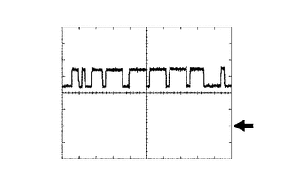
2.75,0.292 3.354,0.583
0.604,0.292
10
1 V/格
3.01,1.396 3.344,1.708
0.333,0.313
10
GND
1.604,1.896 2.479,2.125
0.875,0.229
10
10 μs/格
| ECM 端子名称 | CANH 和 E1 之间 |
| 检测仪分度值 | 1 V/格，10 μs/格 |
| 条件 | 点火开关 ON |
- 提示：
-
波形随 CAN 通信信号而变化。
波形 2
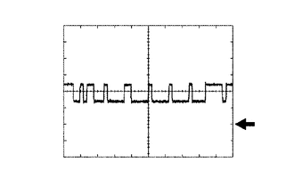
2.76,0.271 3.375,0.531
0.615,0.26
10
1 V/格
3.01,1.365 3.375,1.604
0.365,0.24
10
GND
1.625,1.865 2.583,2.052
0.958,0.188
10
10 μs/格
| ECM 端子名称 | CANL 和 E1 之间 |
| 检测仪分度值 | 1 V/格，10 μs/格 |
| 条件 | 点火开关 ON |
- 提示：
-
波形随 CAN 通信信号而变化。
波形 3
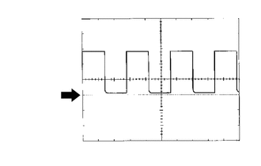
0.438,0.313 1.167,0.625
0.729,0.313
10
5 V/格
0.448,1.177 0.896,1.458
0.448,0.281
10
GND
1.688,1.885 2.708,2.104
1.021,0.219
10
10 ms/格
| ECM 端子名称 | TACH 和 E1 之间 |
| 检测仪分度值 | 5 V/格，10 ms/格 |
| 条件 | 发动机暖机时怠速运转 |
- 提示：
-
波长随发动机转速的增加而变短。
波形 4
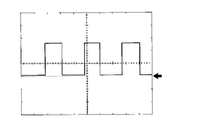
2.677,0.125 3.354,0.385
0.677,0.26
10
5 V/格
2.833,1.229 3.25,1.531
0.417,0.302
10
GND
1.156,1.99 2.219,2.167
1.063,0.177
10
20 ms/格
| ECM 端子名称 | SPD 和 E1 之间 |
| 检测仪分度值 | 5 V/格，20 ms/格 |
| 条件 | 以 20 km/h (12 mph) 的速度行驶 |
- 提示：
-
波长随车速的增加而变短。
波形 5
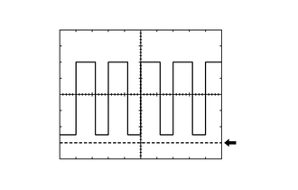
2.76,1.563 3.115,1.792
0.354,0.229
10
GND
0.063,0.063 0.708,0.344
0.646,0.281
10
1 V/格
1.344,1.854 2.208,2.083
0.865,0.229
10
2 ms/格
| ECM 端子名称 | RFC 和 E1 之间 |
| 检测仪分度值 | 1 V/格，2 ms/格 |
| 条件 | 点火开关置于 ON 位置，空调开关打开（最冷） |
- 提示：
-
占空比随发动机冷却液温度而变化。
波形 6
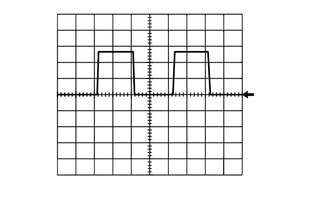
2.594,0.063 3.208,0.375
0.615,0.313
10
5 V/格
2.688,0.896 3.104,1.24
0.417,0.344
10
GND
1.219,1.854 1.979,2.031
0.76,0.177
10
10 ms/格
| ECM 端子名称 | HA1A 和 E04 之间 |
| 检测仪分度值 | 5 V/格，10 ms/格 |
| 条件 | 空燃比传感器预热前怠速 |
波形 7
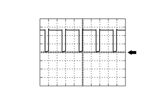
2.854,1 3.323,1.354
0.469,0.354
10
GND
2.625,0.313 3.323,0.594
0.698,0.281
10
5 V/格
0.479,0.625 0.844,0.875
0.365,0.25
10
M-
1.417,1.802 2.573,2.052
1.156,0.25
10
1 ms/格
| ECM 端子名称 | M- 和 ME01 之间 |
| 检测仪分度值 | 5 V/格，1 ms/格 |
| 条件 | 发动机暖机时怠速运转 |
- 提示：
-
占空比随节气门执行器的操作而变化。
波形 8
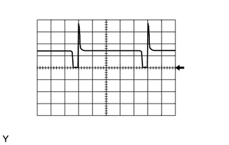
2.677,0.208 3.344,0.51
0.667,0.302
10
10 V/格
2.802,0.938 3.292,1.26
0.49,0.323
10
GND
1.26,1.771 2.25,2.021
0.99,0.25
10
20 ms/格
| ECM 端子名称 | PRG 和 E1 之间 |
| 检测仪分度值 | 10 V/格，20 ms/格 |
| 条件 | 发动机暖机时怠速运转，处于净化控制 |
- 提示：
-
如果波形与插图不相似，则怠速运转 10 分钟或更长时间后再次检查波形。
波形 9
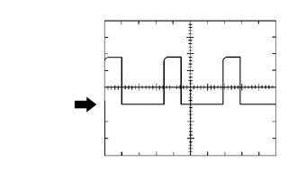
0.604,0.26 1.563,0.573
0.958,0.313
10
5 V/格
0.51,1.125 1.021,1.385
0.51,0.26
10
GND
1.729,1.844 2.583,2.063
0.854,0.219
10
1 ms/格
| ECM 端子名称 | OC1+ 和 OC1- 之间 |
| 检测仪分度值 | 5 V/格，1 ms/格 |
| 条件 | 怠速运转 |
波形 10
0.604,0.26 1.563,0.573
0.958,0.313
10
5 V/格
0.51,1.115 1.021,1.375
0.51,0.26
10
GND
1.729,1.844 2.583,2.063
0.854,0.219
10
1 ms/格
| ECM 端子名称 | OE1+ 和 OE1- 之间 |
| 检测仪分度值 | 5 V/格，1 ms/格 |
| 条件 | 怠速运转 |
波形 11
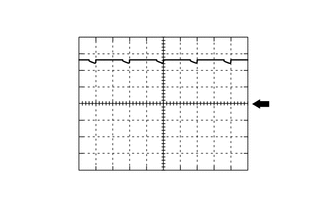
2.854,0.99 3.313,1.302
0.458,0.313
10
GND
2.635,0.26 3.313,0.552
0.677,0.292
10
5 V/格
0.521,0.656 0.99,0.948
0.469,0.292
10
M+
1.396,1.802 2.281,2.021
0.885,0.219
10
1 ms/格
| ECM 端子名称 | M+ 和 ME01 之间 |
| 检测仪分度值 | 5 V/格，1 ms/格 |
| 条件 | 发动机暖机时怠速运转 |
- 提示：
-
占空比随节气门执行器的操作而变化。
波形 12
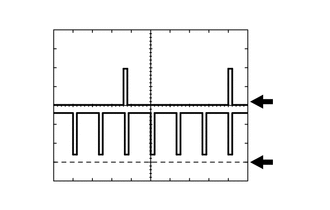
2.906,1 3.333,1.25
0.427,0.25
10
GND
2.896,1.615 3.292,1.833
0.396,0.219
10
GND
0.104,0.688 0.448,1.073
0.344,0.385
10
CH1 (IGT)
0.104,1.198 0.448,1.594
0.344,0.396
10
CH2 (IGF)
1.281,1.896 2.052,2.073
0.771,0.177
10
20 ms/格
0.042,0.115 0.667,0.281
0.625,0.167
10
2 V/格
| ECM 端子名称 | CH1：IGT（1 至 4）和 E1 之间
CH2：IGF1 和 E1 之间 |
| 检测仪分度值 | 2 V/格，20 ms/格 |
| 条件 | 发动机暖机时怠速运转 |
- 提示：
-
波长随发动机转速的增加而变短。
波形 13

0.052,0.031 0.656,0.188
0.604,0.156
10
5 V/格
0.167,0.656 0.49,0.823
0.323,0.167
10
CH1
0.156,1.448 0.479,1.615
0.323,0.167
10
CH2
0.094,0.844 0.49,1.052
0.396,0.208
10
(VV1)
0.083,1.604 0.479,1.833
0.396,0.229
10
(EV1)
3.052,0.813 3.396,0.958
0.344,0.146
10
GND
3.052,1.573 3.396,1.719
0.344,0.146
10
GND
1.271,1.865 2.021,2.042
0.75,0.177
10
20 ms/格
| ECM 端子名称 | CH1：VV1+ 和 VV1- 之间
CH2：EV1+ 和 EV1- 之间 |
| 检测仪分度值 | 5 V/格，20 ms/格 |
| 条件 | 发动机暖机时怠速运转 |
- 提示：
-
波长随发动机转速的增加而变短。
波形 14
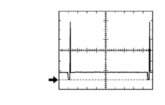
0.677,1.573 1.135,1.771
0.458,0.198
10
false
GND
0.396,0.115 1.063,0.344
0.667,0.229
10
false
20 V/格
1.833,1.896 2.646,2.083
0.813,0.188
10
false
20 ms/格
| ECM 端子名称 | #10（至 #40）和 E01 之间 |
| 检测仪分度值 | 20 V/格，20 ms/格 |
| 条件 | 发动机暖机时怠速运转 |
- 提示：
-
波长随发动机转速的增加而变短。
波形 15
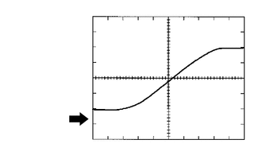
0.51,0.219 1.292,0.521
0.781,0.302
10
0.2 V/格
0.573,1.479 1.021,1.76
0.448,0.281
10
GND
1.802,1.875 2.771,2.115
0.969,0.24
10
200 ms/格
| ECM 端子名称 | OX1B 和 EX1B 之间 |
| 检测仪分度值 | 0.2 V/格，200 ms/格 |
| 条件 | 发动机暖机后，保持发动机转速 2,500 rpm 2 分钟 |
- 提示：
-
在数据表中，项目 O2S B1S2 显示自加热型氧传感器输入至 ECM 的值。
波形 16
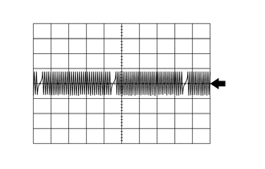
2.978,0.968 3.319,1.135
0.34,0.167
10
GND
1.157,1.862 1.903,2.029
0.747,0.167
10
20 ms/格
0.134,0.04 0.672,0.207
0.538,0.167
10
5 V/格
| ECM 端子名称 | NE+ 和 NE- 之间 |
| 检测仪分度值 | 5 V/格，20 ms/格 |
| 条件 | 发动机暖机时怠速运转 |
- 提示：
-
波长随发动机转速的增加而变短。
波形 17
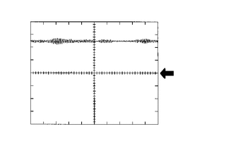
2.427,0.521 3.208,0.865
0.781,0.344
10
1 V/格
2.615,1 3.115,1.292
0.5,0.292
10
GND
1.115,1.865 2.01,2.083
0.896,0.219
10
1 ms/格
| ECM 端子名称 | KNK1 和 EKNK 之间 |
| 检测仪分度值 | 1 V/格，1 ms/格 |
| 条件 | 发动机暖机后，保持发动机转速 4,000 rpm |
- 提示：
- ·
波长随发动机转速的增加而变短。
·波形和振幅根据车辆稍有差别。